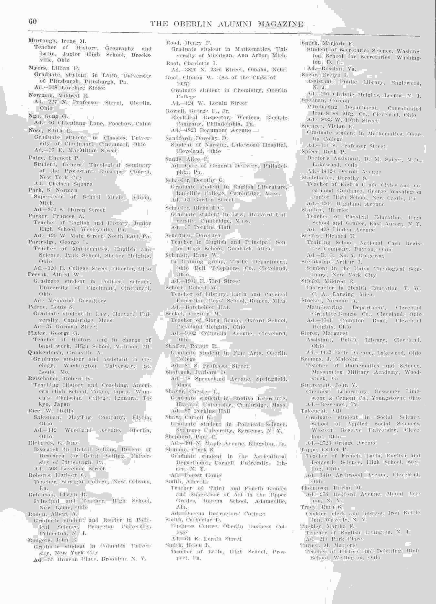

Geng Guong Nga
访问原网页 ↗Visit original website ↗

校友刊作Nga, Geng G.，并列福州通信地址。Beard家书述1926年从福州启程到奥柏林求学，编者附GENG GUONG NGA／Foochow, China／Education照片。该函1926年8月8日，数字汇编PDF第45–46页。
访问原网页 ↗Visit original website ↗

校友刊作Nga, Geng G.，并列福州通信地址。Beard家书述1926年从福州启程到奥柏林求学，编者附GENG GUONG NGA／Foochow, China／Education照片。该函1926年8月8日，数字汇编PDF第45–46页。